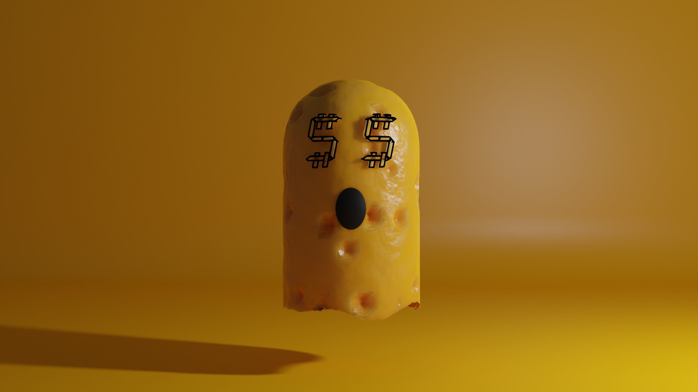
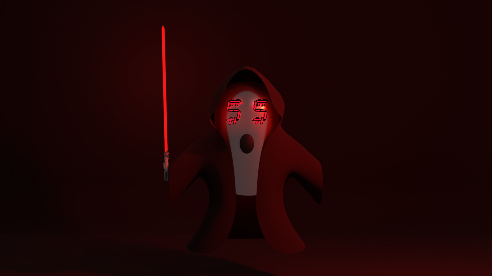
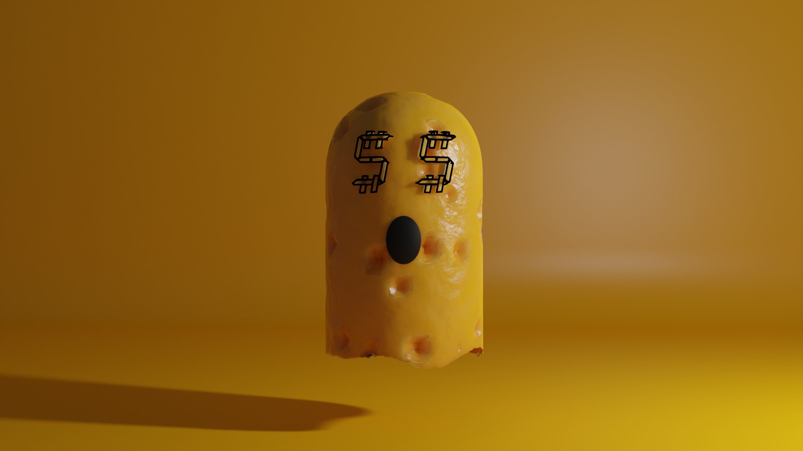
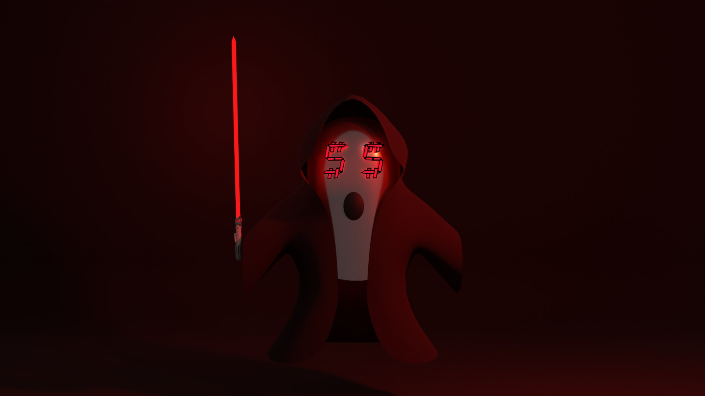

Gho$t World is an NFT series created by Digital Media Artist Cris Gutierrez. The concept behind this NFT collection is to reconcile with others on a trope that you may or may not have used in your lifetime. That saying in question is "going ghost", this might seem like a confusing phrase that might not make sense. But for some viewers out there this could be everything. At the times of our growth and elevation in life, there are often times when we do not want to be bombarded by others not that we are selfish but because we are focusing on our future. Many of us had to "go ghost" in our life where we escape from the stress of the world in order to realign our lives and care solely for ourselves. This collection is meant to reassure and connect with those who feel they have needed to step back in the dark in order to shine. A validation that you are not a selfish person for wanting to care about yourself and your future.
ARTIST BIO
Cristian Gutierrez is a Daly City-based visual artist, creating visual representations in both traditional and digital mediums. Current student at San Jose State University aiming to recieve a BFA in Digital Media Art. Focusing on trap art as his main digital style and Chicano art when working traditional. Art has always been a huge passion for him, taking multiple classes in digital media art to enhance his skills and self-teaching himself traditional art to become an all around artists.
 


